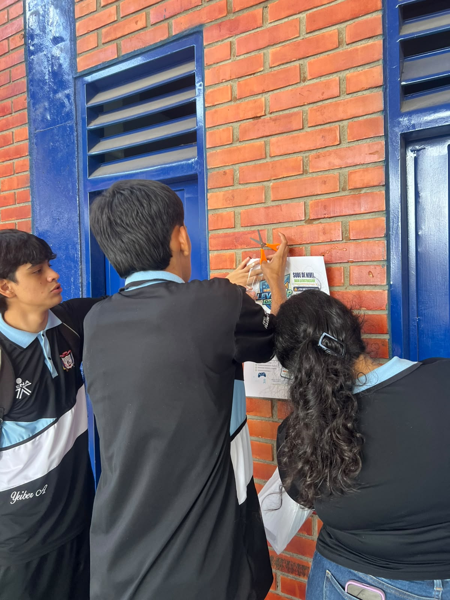
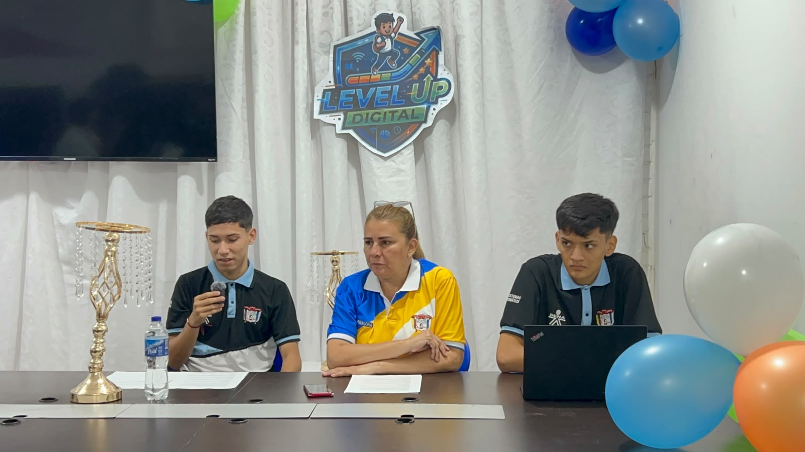
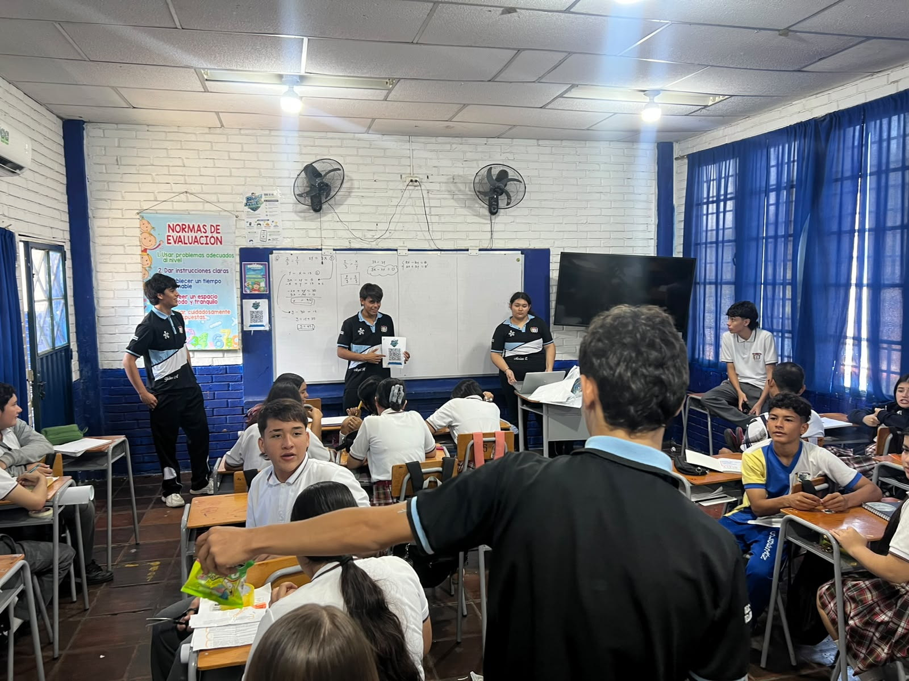
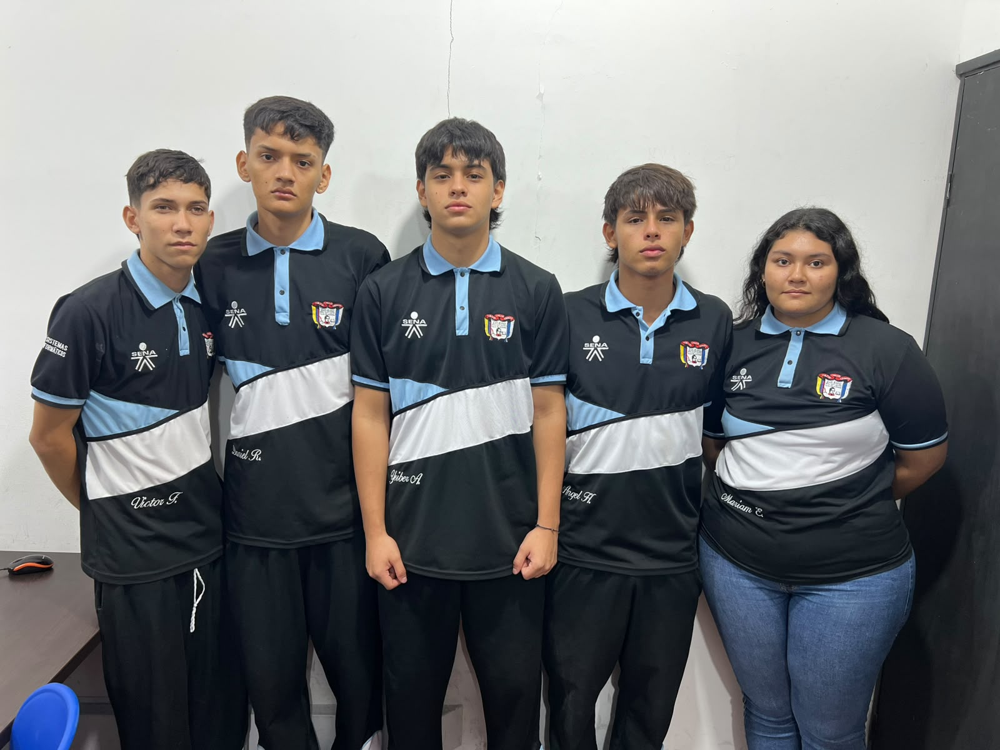

NUESTRO PROYECTO
El propósito de Level Up Digital es generar conciencia en los estudiantes de la Institución Educativa Colegio General Santander sobre la importancia de hacer un uso responsable del celular durante la jornada escolar. A través de un videojuego educativo tipo trivia, se busca que los estudiantes aprendan de una manera dinámica y entretenida sobre los efectos que puede tener el uso excesivo del celular en la concentración, el aprendizaje y la convivencia.
Además, el proyecto busca promover la autorregulación, enseñando a los estudiantes que no se trata solamente de prohibir el uso del celular, sino de aprender a reconocer cuándo es adecuado utilizarlo y cuándo es necesario dejarlo a un lado para prestar atención, estudiar o compartir con otras personas.
De esta manera, Level Up Digital aprovecha la tecnología como una herramienta educativa, utilizando preguntas, niveles y dinámicas de juego para motivar a los estudiantes a reflexionar sobre sus propios hábitos digitales y tomar decisiones más responsables frente al uso de sus dispositivos móviles.
EVIDENCIAS Y ENFOQUE

Socializacion del Material
Se pego y se entrego material didactico.

Realizacion de Entrevista
Entrevista coordinadora de convivencia Yasmin de la Merced Peña Contreras.

Exposicion y Socializacion
Se socializo el proyecto en grados de noveno a once.

Nuestro Grupo
Grupo de trabajo Level UP Digital.